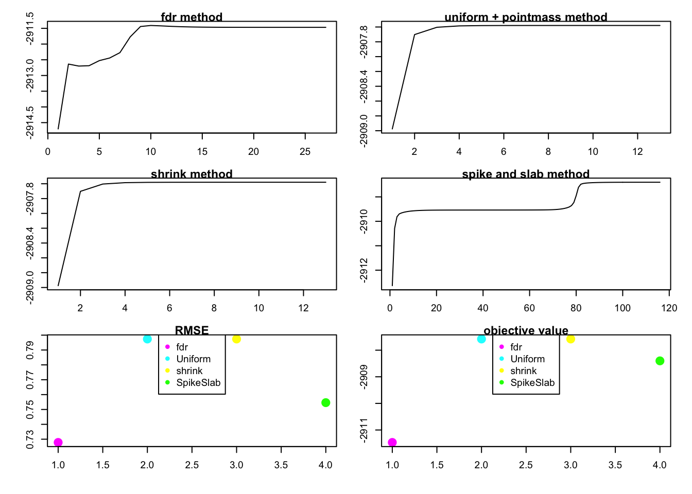
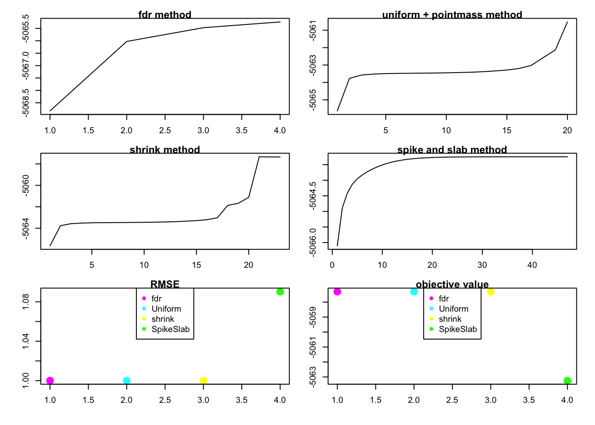

‘gap’ issue
Wei Wang
2017-06-12
Last updated: 2017-06-13
Code version: e477d00
0 introduction of the problem.
In the old code of flash. we found that the greedy algorithm doesn’t increase the lower bound of the log-likelihood. So we turn to understand the likelihood of rank-one and rank-zero model.
Here I will rerun all the representative code, and just provide the original document describing this issue.
0.1 old version documnt
The old version document is in ash-sfa git repo ash-sfa repo.
In the document, we have several observations (please ignore this section since it is just a record for the old code, I will show all the cases in the next section):
- In the rank one FLASH, we can see that our algorithm monotonically increase that lower-bound of the log-likelihood. show case in old code
- In the greedy algorithm, the objective function is not increase in each time adding one more factor. We thought the penalty term in
ashmight cause this problem, and we find one case that the penalty term does have effect in rank one model. After we changemethod = "fdr"tomethod = "shrink"inash, the objective function monotonically increase in the algorithm. But when we change themehtod ="shrink"ingreedyandbackfittingfunction, the log-likelihood still doesn’t increase in each time by adding a new factor. show case in old code. - Then we know that change
method = shrinkcan guarantee that rank one and backfitting(if not add or remove factor) algorithm monotonic increase. The only problem is adding or removing factor, which cause the log-likelihood not monotonic. Then we turn to the simplest case of adding or removing factor: rank-one vs rank-zero model. In this document, one thing we can’t understand well is that the prediction result seems not corresponding to the objective value. show case in old code
We will rerun the analysis in this document. The above observations just show the old documents.
The following is the main part of this document.
1 summary of the result
- section 2.1 shows that in the greedy algorithm doesn’t always increase the lower bound of the log-likelihood when we add one more factor. When we add one more factor the marginal (conditional) likelihood, \(E_q \log\{P(Y|L,F)\} = -\frac{1}{2\sigma^2}(Y_{ij} - \sum_k l_{ik}f_{kj})^2\), would increase, but the \(\log(\frac{P(L)}{q(L)}) = \sum_k \log(\frac{P(L_k)}{q(L_k)})\) would decrease since: \[\begin{eqnarray} E_q log(\frac{P}{q}) \leq log E_q (\frac{P}{q}) = 0 \end{eqnarray}\]
I think the KL(q || p) is not continuous as q,p -> delta_0 [point mass at 0] eg q_n = N(0,1/n) and p_n = N(0,2/n) I think lim_{n } KL(q_n, p_n) may not be 0? If that is right then the lower bound F(g; qhat(g)) is not necessarily continuous in g (even though likelihood is continuous in g I think)… maybe this explains the gap; and may also tell us what to do about it. —— Matthew’s comments
\[lim_{n \rightarrow \inf} KL(q_n, p_n) = -\frac{1}{2}\{\log2 - \frac{1}{2}\} \neq 0\]
section 2.2 shows that rank one FLASH with 4 different method:
method = "fdr",method = "shrink",method = "spike and slab",method = "uniform with point mass". We can see that the lower bound of the log likelihood is increase if we apply different methods without penalty term. The objective value is not always increase inmethod = "fdr"case.In section 2.2, there is an interesting observation that the RMSE results don’t always agree wit the value of the objective function, which means that the method with larger objective function value doesn’t has smaller RMSE value (better in prediction).
In section 2.3 we use
method = "shrink"to the same data in section 2.1.2 where the loglikelihood is not monotonically increase, and we find that the loglikelihood still decrease when we add fifth factor. So this is probably because of the penalty term.Section 2.4 shows that the
method = "fdr"performs very well in rank zero case.In section 2.3 and 2.12, we can see that rank 4 model have larger value of lower bound but rank 5 model has better performance in RMSE.
2 examples
2.1 greedy algorithm
We will start from the problem in greedy algorithm:
library(flashr)
sim_K = function(K, N, P, SF, SL, signal,noise){
E = matrix(rnorm(N*P,0,noise),nrow=N)
Y = E
L_true = array(0, dim = c(N,K))
F_true = array(0, dim = c(P,K))
for(k in 1:K){
lstart = rnorm(N, 0, signal)
fstart = rnorm(P, 0, signal)
index = sample(seq(1:N),(N*SL))
lstart[index] = 0
index = sample(seq(1:P),(P*SF))
fstart[index] = 0
L_true[,k] = lstart
F_true[,k] = fstart
Y = Y + lstart %*% t(fstart)
}
return(list(Y = Y, L_true = L_true, F_true = F_true, Error = E))
}2.1.1
“fdr” method looks fine in many cases.
Greedy_showcase = function(K=5,N = 100, P = 200, SF = 0.8, SL = 0.8, signal = 1,noise = 1){
set.seed(99)
data = sim_K(K,N, P, SF , SL , signal ,noise )
Y = data$Y
E = data$Error
g1 = greedy(Y,K = 10)
plot(g1$clik_vec + cumsum(g1$priorpost_vec),main = "fdr method")
# show the prediction
rmse_5 = sqrt(mean((Y - g1$l %*% t(g1$f) -E)^2)) / sqrt(mean((Y - E)^2))
rmse_4 = sqrt(mean((Y - g1$l[,1:4] %*% t(g1$f[,1:4]) -E)^2)) / sqrt(mean((Y - E)^2))
return(list(obj_track = g1$clik_vec + cumsum(g1$priorpost_vec),RMSE = c(rmse_4,rmse_5)))
}
Greedy_showcase(K=5,N = 100, P = 200, SF = 0.8, SL = 0.8, signal = 1,noise = 1)[1] 2
[1] 3
[1] 4
[1] 5
[1] 6$obj_track
[1] -29754.56 -29569.95 -29393.01 -29301.72 -29223.50
$RMSE
[1] 0.4631371 0.36596282.1.2
But in some case, the lower bound is decrease when we add one more factor:
Greedy_showcase(K=5,N = 100, P=200, SF = 0.5, SL = 0.5, signal = 1,noise = 3)[1] 2
[1] 3
[1] 4
[1] 5
[1] 6$obj_track
[1] -51550.21 -51490.24 -51464.19 -51429.13 -51434.28
$RMSE
[1] 0.7213337 0.6820024We guess that it is because the penalty term in ash we use.
2.2 rank one model with different method
Here we use four different methods: fdr, shrink, uniform without penalty and spike and slab.
rank1test = function(K,N, P, SF , SL , signal ,noise ){
set.seed(99)
par(mfrow = c(3, 2))
par(cex = 0.6)
par(mar = c(3, 3, 0.8, 0.8), oma = c(1, 1, 1, 1))
data = sim_K(K,N, P, SF , SL , signal ,noise )
Y = data$Y
E = data$Error
# "l" is for lower bound
g3_1 = flash(Y,objtype = "l")
plot(g3_1$obj_val_track,main = "fdr method",type = "l")
g3_2 = flash(Y,objtype = "l",ash_para = list( prior = "uniform",pointmass = TRUE,method = NULL))
plot(g3_2$obj_val_track,main = "uniform + pointmass method",type = "l")
g3_3 = flash(Y,objtype = "l",ash_para = list(method = "shrink"))
plot(g3_3$obj_val_track,main = "shrink method",type = "l")
g3_4 = flash(Y,objtype = "l",ash_para = list( prior = "uniform",pointmass = TRUE,method = NULL,mixsd = c(1)))
plot(g3_4$obj_val_track,main = "spike and slab method",type = "l")
obj = c(g3_1$obj_val,g3_2$obj_val,g3_3$obj_val,g3_4$obj_val)
RMSE = c(sqrt(mean((Y - g3_1$l %*% t(g3_1$f) -E)^2)) / sqrt(mean((Y - E)^2)),
sqrt(mean((Y - g3_2$l %*% t(g3_2$f) -E)^2)) / sqrt(mean((Y - E)^2)),
sqrt(mean((Y - g3_3$l %*% t(g3_3$f) -E)^2)) / sqrt(mean((Y - E)^2)),
sqrt(mean((Y - g3_4$l %*% t(g3_4$f) -E)^2)) / sqrt(mean((Y - E)^2)))
plot(RMSE, col =c("magenta","cyan","yellow","green"), pch = 16, cex = 2,main = "RMSE")
legend("top", cex = 1,
legend = c("fdr","Uniform","shrink","SpikeSlab"),
col = c("magenta","cyan","yellow","green"),
pch=16)
plot(obj, col =c("magenta","cyan","yellow","green"), pch = 16, cex = 2,main = "objective value")
legend("top", cex = 1,
legend = c("fdr","Uniform","shrink","SpikeSlab"),
col = c("magenta","cyan","yellow","green"),
pch=16)
}
rank1test(1,100,200,0.5,0.5,1,1)we can see that the RMSE doesn’t agree with the value of objective function.
rank1test(1,100,200,0.8,0.8,1,2)We can see that the objective function is not increasing in method = "fdr"
rank1test(1,20,30,0.5,0.6,1,1)very sparse case
rank1test(1,100,300,0.9,0.9,1,1)
rank1test(1,100,300,0.95,0.99,1,0.5)
2.3 apply greedy without penalty
Greedy_showcase_1 = function(K=5,N = 100, P = 200, SF = 0.8, SL = 0.8, signal = 1,noise = 1,flash_para = list(ash_para = list(method = "shrink"))){
set.seed(99)
data = sim_K(K,N, P, SF , SL , signal ,noise )
Y = data$Y
E = data$Error
g1 = greedy(Y,K = 10,flash_para)
plot(g1$clik_vec + cumsum(g1$priorpost_vec),main = "shrink method")
# show the prediction
rmse_5 = sqrt(mean((Y - g1$l %*% t(g1$f) -E)^2)) / sqrt(mean((Y - E)^2))
rmse_4 = sqrt(mean((Y - g1$l[,1:4] %*% t(g1$f[,1:4]) -E)^2)) / sqrt(mean((Y - E)^2))
return(list(obj_track = g1$clik_vec + cumsum(g1$priorpost_vec),RMSE = c(rmse_4,rmse_5)))
}
Greedy_showcase_1(K=5,N = 100, P=200, SF = 0.5, SL = 0.5, signal = 1,noise = 3,flash_para = list(ash_para = list(method = "shrink")))[1] 2
[1] 3
[1] 4
[1] 5
[1] 6$obj_track
[1] -51543.11 -51477.99 -51445.58 -51408.87 -51418.96
$RMSE
[1] 0.6844070 0.6806335by using the method = "shrink", we can see that the objective function getting large but the lower bound is still not monotonically increasing. So it’s not because of the penalty we use in ash.
2.4 rank zero case
rank1test_0 = function(K,N, P, SF , SL , signal ,noise ){
set.seed(99)
par(mfrow = c(3, 2))
par(cex = 0.6)
par(mar = c(3, 3, 0.8, 0.8), oma = c(1, 1, 1, 1))
data = sim_K(K,N, P, SF , SL , signal ,noise )
Y = data$Y
E = data$Error
# "l" is for lower bound
g3_1 = flash(Y,objtype = "l")
plot(g3_1$obj_val_track,main = "fdr method",type = "l")
g3_2 = flash(Y,objtype = "l",ash_para = list( prior = "uniform",pointmass = TRUE,method = NULL))
plot(g3_2$obj_val_track,main = "uniform + pointmass method",type = "l")
g3_3 = flash(Y,objtype = "l",ash_para = list(method = "shrink"))
plot(g3_3$obj_val_track,main = "shrink method",type = "l")
g3_4 = flash(Y,objtype = "l",ash_para = list( prior = "uniform",pointmass = TRUE,method = NULL,mixsd = c(1)))
plot(g3_4$obj_val_track,main = "spike and slab method",type = "l")
obj = c(g3_1$obj_val,g3_2$obj_val,g3_3$obj_val,g3_4$obj_val)
RMSE = c(sqrt(mean((Y - g3_1$l %*% t(g3_1$f) -E)^2)) ,
sqrt(mean((Y - g3_2$l %*% t(g3_2$f) -E)^2)) ,
sqrt(mean((Y - g3_3$l %*% t(g3_3$f) -E)^2)) ,
sqrt(mean((Y - g3_4$l %*% t(g3_4$f) -E)^2)) )
plot(RMSE, col =c("magenta","cyan","yellow","green"), pch = 16, cex = 2,main = "RMSE")
legend("top", cex = 1,
legend = c("fdr","Uniform","shrink","SpikeSlab"),
col = c("magenta","cyan","yellow","green"),
pch=16)
plot(obj, col =c("magenta","cyan","yellow","green"), pch = 16, cex = 2,main = "objective value")
legend("top", cex = 1,
legend = c("fdr","Uniform","shrink","SpikeSlab"),
col = c("magenta","cyan","yellow","green"),
pch=16)
}
rank1test_0(1,20,60,1,0.6,1,1)
rank1test_0(1,100,200,1,0.6,1,2)rank1test_0(1,60,100,1,0.6,1,0.5)
Session information
sessionInfo()R version 3.3.0 (2016-05-03)
Platform: x86_64-apple-darwin13.4.0 (64-bit)
Running under: OS X 10.12.4 (unknown)
locale:
[1] en_US.UTF-8/en_US.UTF-8/en_US.UTF-8/C/en_US.UTF-8/en_US.UTF-8
attached base packages:
[1] stats graphics grDevices utils datasets methods base
other attached packages:
[1] flashr_0.1.1
loaded via a namespace (and not attached):
[1] Rcpp_0.12.10 knitr_1.15.1 magrittr_1.5
[4] REBayes_0.73 MASS_7.3-45 munsell_0.4.3
[7] doParallel_1.0.10 pscl_1.4.9 colorspace_1.3-2
[10] SQUAREM_2016.8-2 lattice_0.20-34 foreach_1.4.3
[13] plyr_1.8.4 ashr_2.1-10 stringr_1.2.0
[16] tools_3.3.0 parallel_3.3.0 grid_3.3.0
[19] gtable_0.2.0 irlba_2.1.2 git2r_0.18.0
[22] htmltools_0.3.5 iterators_1.0.8 assertthat_0.2.0
[25] lazyeval_0.2.0 yaml_2.1.14 rprojroot_1.2
[28] digest_0.6.12 tibble_1.2 Matrix_1.2-8
[31] ggplot2_2.2.1 codetools_0.2-15 evaluate_0.10
[34] rmarkdown_1.3 stringi_1.1.2 Rmosek_7.1.2
[37] scales_0.4.1 backports_1.0.5 truncnorm_1.0-7 This R Markdown site was created with workflowr